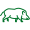
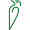

Aculei_Forest
About
Doc
Github
youssefawni.hanna@studio.unibo.it
Mat: 0001132285
Light Position Y:
Light Position X:
Light Position Z:
Distance:
Theta:
Phi:
Near:
Far:
Fovy:
Wild Boar

Fox001
Fox002
Varcon the horse
Nery the pony
Varcon's eye
Deer + Porcupine
+
Falcon + Badger
 +